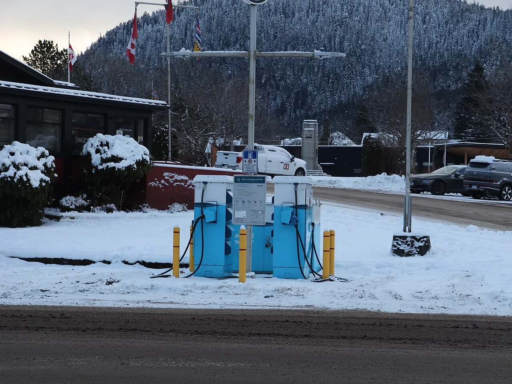
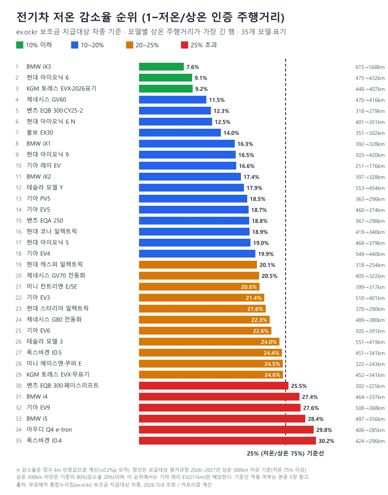
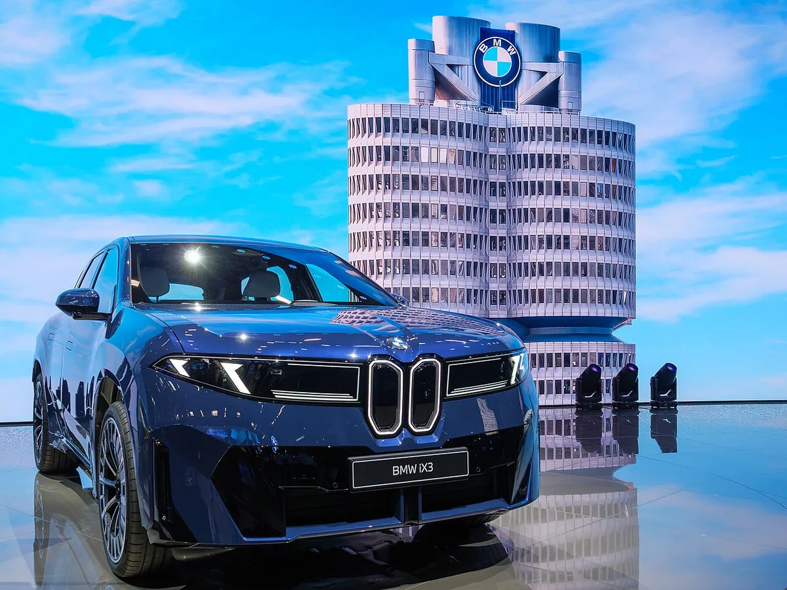
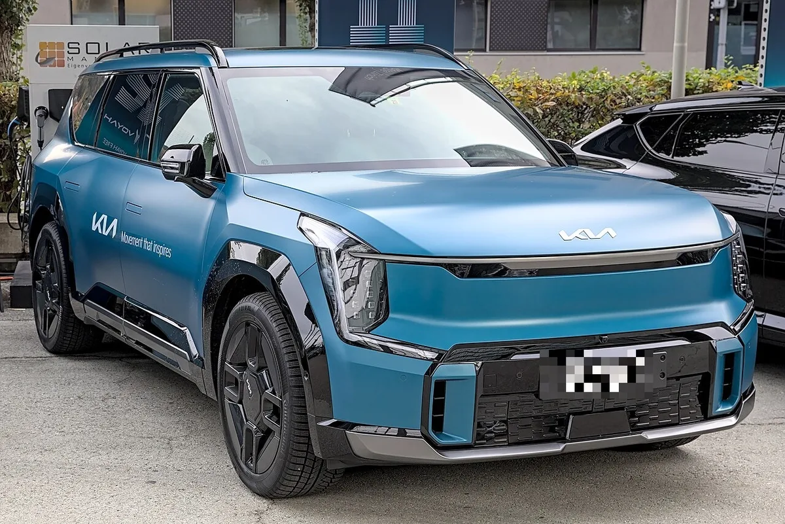
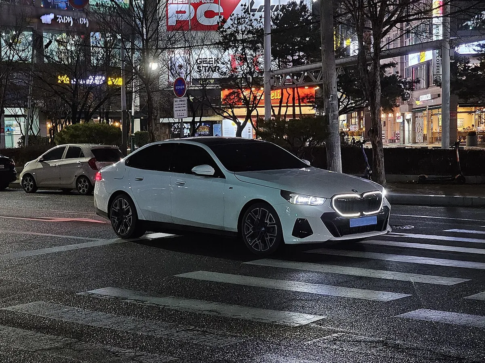
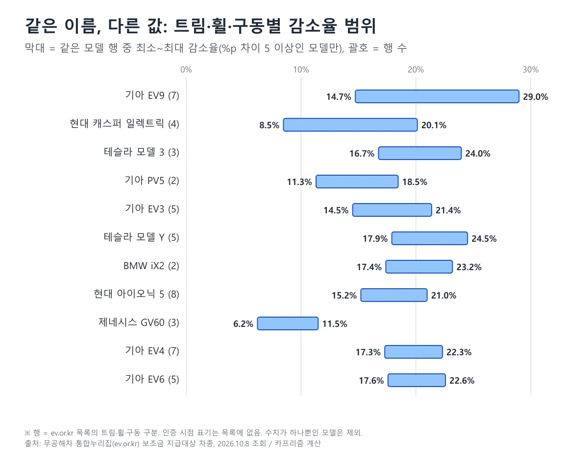
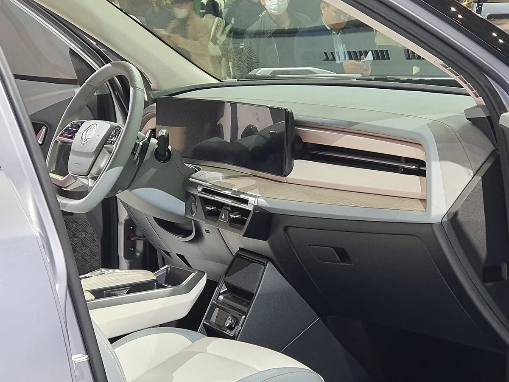
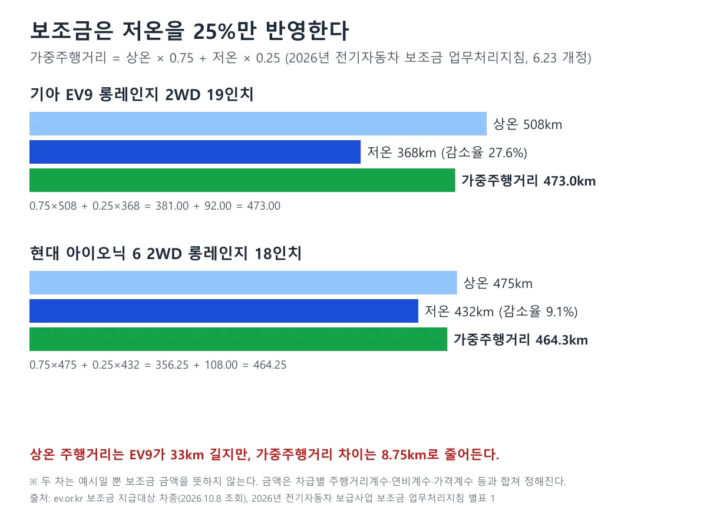

▲ 현대 아이오닉 6(2023년 촬영, 번호판 모자이크). 목록의 아이오닉 6 7개 행은 저온 감소율이 8.3~11.4%다(사진 속 차량이 목록의 '더 뉴 아이오닉6' 행과 같은 사양인지는 확인하지 않았다) ⓒ Benespit, Wikimedia Commons (CC BY-SA 4.0)
전기차 인증 주행거리 표에는 숫자가 두 개 있다. 상온 인증과 저온 인증이다. 2026년 10월 8일 무공해차 통합누리집(ev.or.kr)의 '보조금 지급대상 차종' 목록에서 전기승용 120행을 열어, 상온·저온 값이 모두 적힌 107행으로 감소율(=1−저온÷상온)을 직접 계산했다. 감소율은 최소 6.2%(제네시스 GV60 스탠다드 AWD 19인치)부터 최대 30.2%(폭스바겐 ID.4 Pro)까지 벌어졌고, 107행의 중앙값은 19.6%, 평균은 19.0%였다. 이 글의 수치는 모두 이 목록(2026년 기준 지급대상)에 한정되며, 영하 7℃ 실험실 시험값이지 실제 겨울 도로에서 줄어드는 비율이 아니다.
1. 인증 주행거리는 어떻게 재나 — 영하 7℃, 히터 켠 실험실 값

▲ 눈 덮인 급속충전소(캐나다 브리티시컬럼비아주 촬영). 인증 저온값은 이런 실제 도로가 아니라 차대동력계(실험실 롤러) 위에서 잰 값이다 ⓒ WindBorneListener, Wikimedia Commons (CC0)
저온 인증의 조건은 기후에너지환경부 고시 「제작자동차 시험검사 및 절차에 관한 규정」 별표 5의2(휘발유·가스하이브리드자동차 및 전기자동차의 배출가스 측정방법) 중 '전기자동차의 주행거리 측정' 항목에 적혀 있다. 이 글에서 확인한 현행본은 2026년 9월 14일 시행분이다. 핵심 조건은 다음과 같다.
| 항목 | 상온 시험 | 저온 시험 |
|---|---|---|
| 외기 온도(예비운전 조건) | 25±5℃ | −7±3℃ |
| 측정 방식 | 차대동력계 위에서 도심 모드(CVS-75)와 고속도로 모드를 조합해 측정 | |
| 히터 | 조항에서 확인하지 못함 | 최대로 작동. 완전 자동 온도조절 히터가 있으면 자동 22℃로 작동 |
| 복합 주행거리 | 0.55×도심 주행거리 + 0.45×고속도로 주행거리 | |
같은 항목은 완전 자동 온도조절 히터가 있는 차의 저온 시험에서 도심·고속도로 주행거리를 계산할 때 각각 0.89, 0.92를 곱하는 보정식도 정해 두었다(히터를 최대로 작동한 경우에는 이 계수가 없다). 인증 저온값은 영하 7℃ 전후의 실험실에서 히터를 켜고 잰 값이며, 실제 도로의 바람·눈길·장시간 주차 후 출발 같은 조건은 들어 있지 않다. 한국소비자원이 실도로에서 시험한 결과는 이미 다뤘다("영하 되니 33% 뚝"… 겨울철 전기차 주행거리, 숫자로 보니 이 정도였다). 이 글은 그와 달리 제조사가 공식 인증받은 두 숫자의 격차만 본다.
제작자동차 시험검사 및 절차에 관한 규정 원문 바로가기2. 어떤 자료로 줄 세웠나 — 107행의 범위와 빠진 것
무공해차 통합누리집 '보조금 지급대상 차종'은 2026년 기준 지급대상 341건(전기승용 120행, 화물·승합·이륜·건설기계 등 포함)을 보여준다. 그중 전기승용 120행에서 상온·저온 주행거리가 모두 적힌 행이 107행이다. 이 목록의 주행거리는 2026년 지침에 따라 한국환경공단이 시행한 '전기자동차 보급대상 평가시험 결과'를 쓴다(2026년 전기자동차 보급사업 보조금 업무처리지침 별표 1).
| 구분 | 내용 |
|---|---|
| 사용한 행 | 전기승용 120행 중 상온·저온 값이 모두 있는 107행(트림·휠·구동·표기 구분 포함) |
| 값이 없는 행(13행) | 기아 EV5 스탠다드 2행, PV5 4행, BMW iX3 50 xDrive SE, 테슬라 모델 3 RWD(2027), 모델 Y 프리미엄 L AWD, 폴스타 3·4(3행), 스타리아 라운지 일렉트릭. 목록에 숫자가 없어 제외했다 |
| 목록에 없는 브랜드 | BYD, 르노코리아는 이 목록의 전기승용에서 찾지 못했다. 제네시스는 제조사 칸에 '현대자동차'로 올라 있는 ELECTRIFIED G80·GV70과 GV60을 포함했다 |
| 인증 연도 | 목록에 인증 연도 열이 없다. 같은 모델의 다른 인증 시점 행이 섞여 있을 수 있다(예: 토레스 EVX '2026' 표기) |
| 모델별 순위표 | 107행을 그대로 줄 세운 것이 아니라 모델(표기)마다 상온 최장 행 하나를 뽑은 35개 항목이다(3장). 분포 통계(중앙값·구간별 행 수)는 107행 기준이다 |
| 계산 | 감소율=1−저온÷상온. 정수 km 값으로 계산해 ±0.2%p 오차가 있다 |
폴스타는 행은 있지만 상온·저온 칸이 비어 있어 비교하지 못했다. 이 목록은 보조금 지급대상이므로 시판 중인 전기차 전체가 아니다. 순위는 '이 목록에 오른 행'의 순위다. 107행에는 기아 레이 EV 밴·PV5 WAV처럼 승용 목록에 올라 있는 상용·특수 용도 행도 포함되고, 아우디 Q4 45 e-tron과 Q4 Sportback 45 e-tron처럼 값이 똑같은 행도 따로 센다.
목록 값이 다른 공개 인증 보도와 맞는지는 한 건을 대조했다. 메트로신문(이승혁 기자, 2026.9.27)은 국립환경과학원 자동차 배출가스 및 소음 인증시스템(KENCIS) 기준으로 테슬라 모델 3 프리미엄 롱레인지 RWD의 상온 551km·저온 419km(저온 유지율 76.0%)를 전했고, 이는 이 목록의 같은 행(551→419km)과 일치한다. 같은 보도의 벤츠 CLA 250+(474→374km)와 GLC 300 4MATIC(448→395km)은 이 목록에 없다. 보조금 지급대상 목록이 시판 전기차 전체의 인증값이 아니라는 뜻이다. 보조금 지침은 연비는 한국에너지공단 '자동차 표시연비', 상온·저온 주행거리는 한국환경공단의 평가시험 결과를 쓰도록 정해(별표 1) 두 기관의 값이 출처가 다르다.
무공해차 통합누리집 보조금 지급대상 차종 바로가기3. 감소율 순위 — 모델별 대표 행 35개

▲ 모델별 상온 주행거리가 가장 긴 행 기준 감소율 순위. 점선은 보급대상 평가규정의 저온 75% 기준선(감소율 25%, 상온 300km 이상)이다
한 모델에 행이 여러 개라 모델명 하나로 순위를 매길 수 없어, 모델마다 상온 주행거리가 가장 긴 행을 대표로 골랐다. 토레스 EVX와 벤츠 EQB는 같은 이름 안에 '(2026)'·'(CY25-2)' 같은 표기 행이 따로 있어 표기별로 나눠 35개 항목이 됐다. 마지막 열은 같은 모델의 전체 행 수와 감소율 범위다.
| 순위 | 대표 행(목록 표기) | 상온 km | 저온 km | 감소율 | 같은 모델 행 수·범위 |
|---|---|---|---|---|---|
| 1 | iX3 50 xDrive | 615 | 568 | 7.6% | 1행 |
| 2 | 더 뉴 아이오닉6 2WD 롱레인지 18인치 | 475 | 432 | 9.1% | 7행, 8.3~11.4% |
| 3 | 토레스 EVX 18인치(2026) | 448 | 407 | 9.2% | 2행, 7.9~9.2% |
| 4 | GV60 스탠다드 2WD 19인치 | 470 | 416 | 11.5% | 3행, 6.2~11.5% |
| 5 | EQB 300 4MATIC(Facelift)(CY25-2) | 318 | 279 | 12.3% | 1행 |
| 6 | 아이오닉6 N | 401 | 351 | 12.5% | 1행 |
| 7 | 볼보 EX30 Single Motor ER | 351 | 302 | 14.0% | 2행, 14.0~17.2% |
| 8 | iX1 eDrive20(11HM) | 392 | 328 | 16.3% | 3행, 14.4~18.6% |
| 9 | 아이오닉 9 성능형 AWD | 503 | 420 | 16.5% | 3행, 16.5~19.9% |
| 10 | 레이 EV 2WD 14인치 1인승 밴 | 211 | 176 | 16.6% | 3행, 모두 16.6% |
| 11 | iX2 eDrive20(71GN) | 397 | 328 | 17.4% | 2행, 17.4~23.2% |
| 12 | Model Y L AWD | 553 | 454 | 17.9% | 5행, 17.9~24.5% |
| 13 | PV5 패신저 5인승 롱레인지 | 363 | 296 | 18.5% | 2행, 11.3~18.5% |
| 14 | EV5 롱레인지 2WD | 460 | 374 | 18.7% | 4행, 18.5~21.4% |
| 15 | EQA 250(Facelift) | 367 | 298 | 18.8% | 1행 |
| 16 | 코나 일렉트릭 2WD 롱레인지 17인치 빌트인 캠 미적용 | 419 | 340 | 18.9% | 4행, 14.1~18.9% |
| 17 | 더 뉴 아이오닉5 AWD 롱레인지 19인치 | 468 | 379 | 19.0% | 8행, 15.2~21.0% |
| 18 | EV4 롱레인지 2WD 17인치 | 549 | 440 | 19.9% | 7행, 17.3~22.3% |
| 19 | 캐스퍼 일렉트릭 항속형 15인치 | 318 | 254 | 20.1% | 4행, 8.5~20.1% |
| 20 | ELECTRIFIED GV70 AWD 19인치 | 405 | 322 | 20.5% | 2행, 모두 20.5% |
| 21 | New MINI Countryman E | 399 | 317 | 20.6% | 4행, 19.2~22.1% |
| 22 | EV3 롱레인지 2WD 17인치 | 510 | 401 | 21.4% | 5행, 14.5~21.4% |
| 23 | 스타리아 리무진 일렉트릭 6인승 | 370 | 290 | 21.6% | 1행 |
| 24 | ELECTRIFIED G80 | 489 | 380 | 22.3% | 1행 |
| 25 | 더뉴EV6 롱레인지 2WD 19인치 | 505 | 391 | 22.6% | 5행, 17.6~22.6% |
| 26 | Model 3 Premium Long Range RWD | 551 | 419 | 24.0% | 3행, 16.7~24.0% |
| 27 | ID.5 Pro | 451 | 341 | 24.4% | 1행 |
| 28 | MINI Aceman E | 322 | 243 | 24.5% | 5행, 19.8~24.7% |
| 29 | 토레스 EVX 18인치 | 452 | 341 | 24.6% | 2행, 24.6~28.9% |
| 30 | EQB 300 4MATIC(Facelift) | 302 | 225 | 25.5% | 1행 |
| 31 | i4 eDrive 40 LCI(61HD) | 464 | 337 | 27.4% | 3행, 24.1~27.4% |
| 32 | EV9 롱레인지 2WD 19인치 | 508 | 368 | 27.6% | 7행, 14.7~29.0% |
| 33 | i5 eDrive 40 | 497 | 356 | 28.4% | 1행 |
| 34 | Q4 45 e-tron | 406 | 285 | 29.8% | 2행, 모두 29.8% |
| 35 | ID.4 Pro | 424 | 296 | 30.2% | 1행 |
저온 주행거리가 가장 긴 대표 행은 iX3 50 xDrive 568km, Model Y L AWD 454km, EV4 롱레인지 2WD 17인치 440km 순이다. 감소율이 낮다는 것과 저온 주행거리가 길다는 것은 다른 이야기다. 상온 주행거리가 짧은 차는 감소율이 낮아도 저온 주행거리가 짧을 수 있다(예: 기아 레이 EV 211→176km).
4. 덜 줄어든 쪽 — 숫자로만 확인되는 것
▲ 현대 아이오닉 6(2023년 촬영, 번호판 모자이크). 목록의 아이오닉 6 7개 행은 모두 감소율이 8.3~11.4%다(사진 속 차량의 사양은 확인하지 않았다) ⓒ Benespit, Wikimedia Commons (CC BY-SA 4.0)
107행 전체에서 가장 낮은 행은 제네시스 GV60 스탠다드 AWD 19인치(403→378km) 6.2%, 그다음이 같은 AWD 20인치 7.3%(386→358km)다. 순위표(3장)는 모델별 대표 행 기준이라 GV60은 2WD 19인치 11.5%로 4위에 올라 있다. 감소율 10% 이하 10행은 BMW iX3 50 xDrive(7.6%), 현대 아이오닉 6 4행(8.3~9.1%), KGM 토레스 EVX '2026' 표기 2행(7.9%·9.2%), 제네시스 GV60 스탠다드 AWD 2행(6.2%·7.3%), 현대 캐스퍼 일렉트릭 크로스 17인치(8.5%)다. 아이오닉 6은 7개 행 전부 8.3~11.4%로 모델 안에서 편차가 작은 편이다.

▲ 전시장의 BMW iX3(2025년 IAA 서밋 촬영). 목록의 iX3 50 xDrive는 상온 615km, 저온 568km로 감소율 7.6%다 ⓒ Matti Blume, Wikimedia Commons (CC BY-SA 4.0)
이 숫자가 왜 낮은지는 ev.or.kr 목록이 알려주지 않는다. 열관리 방식이나 배터리 종류가 영향을 준다는 설명이 업계에 있지만, 이 목록의 값만으로 원인을 가릴 수는 없어 이 글은 원인을 단정하지 않는다. 확인되는 것은 같은 시험 조건에서 상온 대비 저온 값이 얼마나 가까운가다. 다만 같은 모델이라도 구동·휠에 따라 값이 크게 달라지는 사례가 있어(6장), 대표 행의 순위를 모델 전체로 일반화하면 안 된다.
5. 많이 준 쪽과 '75% 기준선' — 10행이 선 아래

▲ 기아 EV9 GT-Line 전시차(2023년 오토 취리히 촬영, 번호판 모자이크). 목록의 대표 행(롱레인지 2WD 19인치)은 508→368km, 감소율 27.6%이며 사진과 같은 사양인지는 확인하지 않았다 ⓒ Alexander-93, Wikimedia Commons (CC BY-SA 4.0)
보급대상 평가규정(기후에너지환경부 고시, 2026년 6월 30일 시행본) 별표 1 비고 3은 전기승용차 저온 1회 충전 주행거리 기준을 상온 주행거리별로 정한다. 값은 모두 '저온÷상온 이상'이다.
| 상온 1회 충전 주행거리 | 2021년 | 2022~2023년 | 2024~2025년 | 2026~2027년 | 2028년~ |
|---|---|---|---|---|---|
| 300km 미만 | 70% | 75% | 80% | 80% | 85% |
| 300km 이상 | 65% | 70% | 75% | 75% | 80% |
| 400km 이상 | 65% | 65% | 70% | 75% | 80% |
| 500km 이상 | 65% | 65% | 70% | 75% | 80% |
같은 비고는 "평가를 완료한 전기자동차 중 부분적인 성능개선, 사양변경 등으로 변경인증을 받은 경우에는 당해 연도의 기준을 적용한다"고 정하고, 최초 인증서에 적힌 상온·저온 값보다 변경인증 값이 같거나 높으면 제외한다고 적었다. 이 숫자 기준선(상온 300km 이상이면 75%, 미만이면 80%)에 목록 107행을 그대로 대입하면 10행이 선 아래다.
| 행(목록 표기) | 상온 km | 저온 km | 저온÷상온 |
|---|---|---|---|
| EV9 롱레인지 2WD 19인치 | 508 | 368 | 72.4% |
| EV9 롱레인지 4WD 19인치 | 453 | 337 | 74.4% |
| EV9 롱레인지 GTL 4WD 21인치 | 452 | 321 | 71.0% |
| i4 eDrive 40 LCI(61HD) | 464 | 337 | 72.6% |
| i5 eDrive 40 | 497 | 356 | 71.6% |
| EQB 300 4MATIC(Facelift) | 302 | 225 | 74.5% |
| 토레스 EVX 20인치 | 436 | 310 | 71.1% |
| ID.4 Pro | 424 | 296 | 69.8% |
| Q4 45 e-tron | 406 | 285 | 70.2% |
| Q4 Sportback 45 e-tron | 406 | 285 | 70.2% |
이 표를 읽는 법 위 10행은 숫자로 75%·80%에 못 미칠 뿐, 규정 위반이나 지급 제외를 뜻하지 않는다. 목록에 인증 연도가 없고 규정에 변경인증·경과 조치 문구가 있어, 각 행에 어느 연도 기준이 적용되는지는 이 자료로 확인하지 못했다. 이 10행이 어떤 근거로 지급대상에 올라 있는지 환경공단에 확인한 것도 아니다.

▲ 한글 간판이 보이는 도심에서 촬영된 BMW i5. 목록의 i5 eDrive 40은 497→356km, 감소율 28.4%다(사진으로 사양은 확인하지 않았다) ⓒ Damian B Oh, Wikimedia Commons (CC BY-SA 4.0)
6. 같은 이름, 다른 값 — 트림·휠·구동이 바꾸는 감소율

▲ 모델 안의 행(트림·휠·구동)별 감소율 범위. 차이가 5%p 이상인 모델만 표시했다
기아 EV9는 7행이 감소율 14.7%(EV9 GT, 421→359km)에서 29.0%(EV9 롱레인지 GTL 4WD 21인치, 452→321km)까지 벌어진다. 대표 행인 롱레인지 2WD 19인치는 508→368km로 27.6%다. 현대 아이오닉 5는 AWD 롱레인지 19인치가 468→379km(19.0%), 같은 AWD 롱레인지 20인치는 434→368km(15.2%)다. 휠 한 사이즈 차이로 상온 값도 저온 값도, 감소율도 다르다.
표기 차이도 크다. KGM 토레스 EVX는 '(2026)' 표기 행 2개가 7.9~9.2%인데, 표기 없는 행 2개는 24.6~28.9%다. 벤츠 EQB 300 4MATIC은 'CY25-2' 표기 행이 12.3%(318→279km), 표기 없는 페이스리프트 행이 25.5%(302→225km)다. 현대 캐스퍼 일렉트릭은 크로스 17인치 8.5%, 항속형 15인치 20.1%다. 표기의 의미(인증 시점·사양 변경)는 목록에 설명이 없어 이 글은 해석하지 않고 행 이름 그대로 적었다.

▲ KGM 토레스 EVX 실내(2023년 서울모빌리티쇼 전시차). 같은 토레스 EVX 이름 아래 행에 따라 감소율이 7.9%에서 28.9%까지 갈린다 ⓒ Damian B Oh, Wikimedia Commons (CC BY-SA 4.0)
7. 보조금은 저온을 얼마나 반영하나 — 가중주행거리 0.75 : 0.25

▲ 가중주행거리 계산 예시. 두 차의 상온 격차 33km가 가중주행거리에서는 8.75km로 줄어든다
2026년 전기자동차 보급사업 보조금 업무처리지침(6월 23일 개정) 별표 1에 따르면 전기승용차 성능보조금은 연비보조금과 주행거리보조금의 합이다(합계 상한은 소형 이하 250만 원, 중형 이상 300만 원). 두 보조금 모두 저온이 반영된다. 지침은 이 계산의 연비를 한국에너지공단 '자동차 표시연비'에서, 상온·저온 주행거리를 한국환경공단이 시행한 평가시험 결과에서 가져오도록 정한다.
| 항목 | 지침 문구 |
|---|---|
| 가중주행거리 | 상온주행거리×0.75 + 저온주행거리×0.25 |
| 가중연비 | 상온연비×0.75 + 저온연비×0.25, 저온연비=(저온주행거리÷상온주행거리)×상온연비 |
| 연비계수 | 가중연비÷기준가중연비(5.0km/kWh) |
| 주행거리계수(중·대형) | 440km 이상 0.0019×주행거리+0.164(550km 초과 1.21), 440km 미만 0.0054×주행거리−1.376, 300km 미만 0.2 |
| 주행거리계수(경·소형) | 0.0033×주행거리+0.175, 300km 이상 1.17 |
예를 들어 EV9 롱레인지 2WD 19인치는 0.75×508+0.25×368=473.0km, 아이오닉 6 2WD 롱레인지 18인치는 0.75×475+0.25×432=464.25km다. 상온 값은 33km 차이지만 가중주행거리는 8.75km 차이다. 저온 값이 25%만 반영되므로, 저온 감소폭이 큰 차의 손해가 상온 값 차이만큼 크게 보조금에 드러나지는 않는다. 다만 이 계산은 보조금 금액이 아니다. 차급 판정, 가격계수 등 다른 요소가 함께 들어가며, 실제 국비·지방비는 ev.or.kr '보조금 안내·계산기'와 지자체 공고로 확인해야 한다. 저온 비율이 낮으면 보조금을 깎는다는 별도 감액 문구는 지침 문서 전체에서 '저온'을 검색해 확인한 범위에서 찾지 못했다.
2026년 전기자동차 보급사업 보조금 업무처리지침(6.23 개정) 바로가기8. 겨울 앞두고 확인할 것 — 공식 자료로 근거가 되는 것만
공식 문서로 뒷받침되는 확인 포인트만 추렸다. 겨울 운전 요령은 근거가 갈리는 부분이 많아 이 글에서 다루지 않고, 기존 기사("영하에서 30% 사라진다"… 겨울 전기차, 습관 다섯 개로 되돌리는 방법)에 맡긴다.
| 확인할 것 | 근거 | 방법 |
|---|---|---|
| 내가 고른 트림·휠·구동의 저온값 | 같은 모델도 행마다 다름(6장) | ev.or.kr '보조금 지급대상 차종'에서 모델·휠 단위로 상온·저온 확인 |
| 감소율과 저온 절대값을 함께 보기 | 감소율이 낮아도 상온이 짧으면 저온 km가 짧음(3장) | 하루 주행·충전에 필요한 km와 저온 km 비교 |
| 인증값의 한계 | 영하 7℃ 실험실, 히터 최대 또는 자동 22℃(1장) | 인증값은 실도로 조건을 담지 않음을 전제로 읽기 |
| 보조금 금액 | 가중주행거리 0.75:0.25(7장) | ev.or.kr 보조금 안내·계산기와 거주지 지자체 공고 |
"실도로 조건을 담지 않는다"는 것은 시험 방법에서 이끌어낸 카프리즘의 해석이다. 영하 7℃보다 낮은 기온이나 장시간 주차 후 출발 같은 조건의 감소폭은 이 자료로 알 수 없다. 전기차 감가·보조금 관점은 "3년 타면 반값"이라던 전기차, 아이오닉5와 모델Y는 정말 같은 속도로 떨어졌을까에서, 모델 3 퍼포먼스 인증 소식은 "겨울에도 413km 달린다"… 테슬라 신형 모델 3 퍼포먼스, 국내 인증 완료에서 다뤘다. 이 글은 가격이 아니라 인증 숫자 두 개의 격차에 한정했다. 참고로 앞 기사가 다룬 신형 모델 3 퍼포먼스의 저온 413km는 이 목록의 'Model 3 Performance' 행(상온 430→저온 358km)과 다르다. 연식·인증 시점이 다르거나 목록에 아직 반영되지 않았을 가능성이 있지만 어느 쪽인지는 확인하지 못했고, 이는 목록에 인증 연도가 없다는 한계를 보여주는 사례다.
확인하지 못한 것 목록 값의 행별 인증 연도, 기후에너지환경부 보도자료 형태의 모델별 저온 비교표(검색했으나 찾지 못했다), 모델 3 프리미엄 롱레인지 RWD 한 행 외 나머지 행의 KENCIS 인증값 일치 여부, BYD·르노코리아의 상온·저온 인증값, 폴스타 값, 5장 10행이 기준선 아래인데도 목록에 있는 이유, 열관리 방식이나 배터리 종류가 감소율에 준 영향.
9. 정리 — 전기차를 고를 때 이 두 숫자를 이렇게 본다
체크포인트
- ev.or.kr 지급대상 목록 107행의 저온 감소율은 6.2~30.2%, 중앙값 19.6%다.
- 모델별 대표 행에서는 BMW iX3 7.6%, 아이오닉 6 9.1%가 가장 덜 줄었고 폭스바겐 ID.4 30.2%, 아우디 Q4 29.8%가 가장 많이 줄었다.
- 같은 이름도 행마다 다르다. EV9는 14.7~29.0%, 토레스 EVX는 7.9~28.9%다. 트림·휠·구동까지 확인해야 한다.
- 인증 저온값은 영하 7℃ 실험실에서 히터를 켜고 잰 값이다. 실제 도로 감소율과 같다고 읽으면 안 된다.
- 보조금은 가중주행거리에서 저온을 25%만 반영한다(상온 75%).
겨울을 앞두고 전기차를 비교한다면 상온 주행거리 하나만 보지 말고, 같은 행의 저온 값과 둘의 격차를 함께 확인하는 편이 낫다. 목록에서 가장 덜 줄어든 차가 모든 조건에서 가장 좋다는 뜻은 아니며, 가장 많이 줄어든 차가 겨울에 못 쓴다는 뜻도 아니다. 이 순위는 같은 시험 조건에서 두 인증값이 얼마나 가까운지를 보여줄 뿐이다.